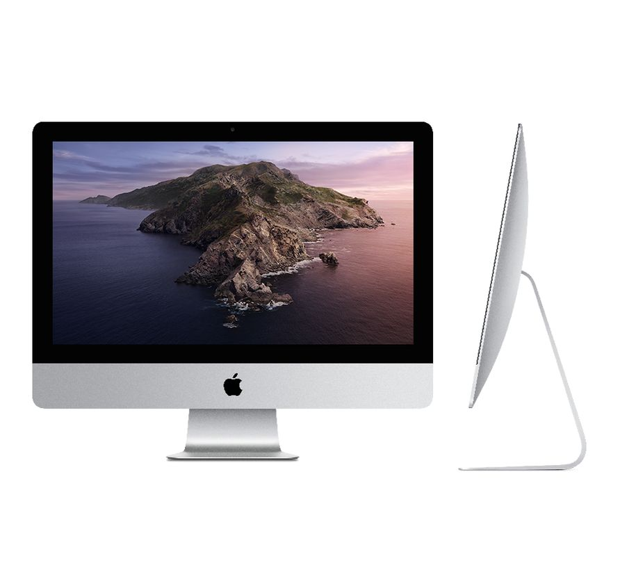
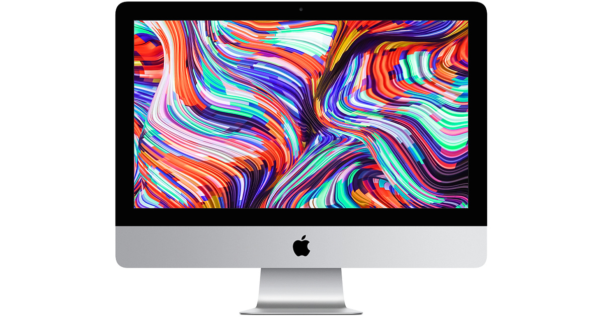
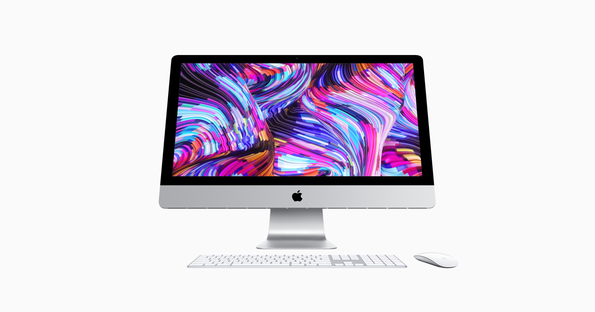

Laptops and Computers

Technical Specs
Intel 8th generation i5 / i7
OS : Mac OS High Sierra
RAM : 8GB/ 16GB / 32 GB /64 GB
Cores : 4/6
Storage
SSD : 1TB Hybrid / 2TB / 1TB SSD
Cloud : Apple iCloud
Graphics : Intel Iris Plus /Intel UHD graphics/Radeon Vega Graphics
Screen Size : 21 inch /27 inch
True Tone : Yes
4K : Yes
Resolution :
Keyboard : Magic Keyboard with backlight
Magic Mouse / Magic Touchpad
Ports : 3 Thunderbolt 3 , 1 SD Card reader, Ethernet port, 3.5 mm jack
Apple iMac
Technical Specs
Intel 8th generation i5 / i7
OS : Mac OS High Sierra
RAM : 8GB/ 16GB / 32 GB /64 GB
Cores : 4/6
Storage
SSD : 1TB Hybrid / 2TB / 1TB SSD
Cloud : Apple iCloud
Graphics : Intel Iris Plus /Intel UHD graphics/Radeon Vega Graphics
Screen Size : 21 inch /27 inch
True Tone : Yes
4K : Yes
Resolution :
Keyboard : Magic Keyboard with backlight
Magic Mouse / Magic Touchpad
Ports : 3 Thunderbolt 3 , 1 SD Card reader, Ethernet port, 3.5 mm jack
Review
Apple have been known for their beautifully designed laptops, phones and tablets, but Apple started out as a Computer Manufacturer and the iMac has been on the shelves since its inception. The iMac is an All-in-one desktop with a crisp 4k 21inch or 27inch screen. This desktop was one of its kind when it was launched and still remains one of the few all-in-one options. But the value for money for this device is best in class as no other computing device with a great screen and great performance can be bought for the $1000 range. Moreover a 21nch 4k monitor costs near to that of the whole iMac. This is why Apple's iMac range is the best All-in-one for all. It startts from $999 for a 21 inch non-4k but still an amazing retina display and 4 core i5 processor an 8gb of RAm. This spec has a 1TB hard drive instead of an SSD. But for $999 an all-in-one with an aluminium unibody design, good mouse and keyboard and Apple's customer support seems the best deal of Tech in this era. For $300 more you get a better 4k screen, better storage and newer processor options.
The iMac is soully intended for Creatives because of the screen, but can be used in Office spaces and by students too. The machine can handle any day to day taks easily without getting hot or throttled. And for the creatives, there are enough ports on the back for attaching all the peripherals. There is another variant of the iMac, which is the iMac Pro. As the name suggests this one is for the Professionals who need a bite more processing power.
The iMac comes in a Silver/ Grey Aluminium color, starts from $999 and can be specd out to $3500 for the 27inch Intel 9th Gen i7 model with 32GB RAM. Wheres the iMac Pro starts at this price and go all the way upto $10000. But still, for the average user, office personnels, receptionists, college students, video editors and many more the iMac is a great option due to its versatility and value for money. Check out the iMac in the link below.
Gallery

